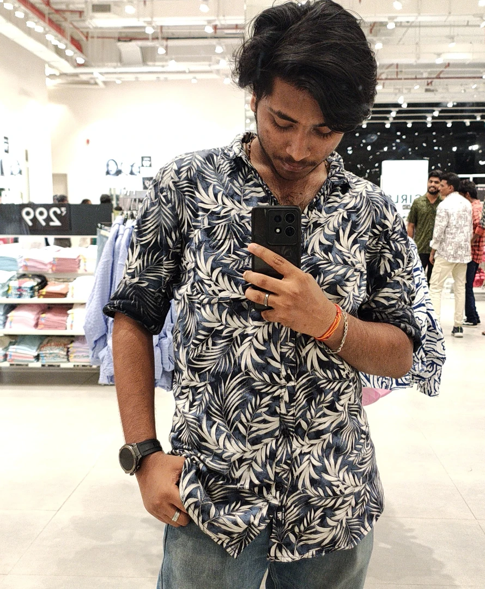

// currently learning, currently building
Hi, I'm Aju Krishna B
Student & Aspiring Developer
I turn late nights and half-finished tutorials into real, working things. This is a running log of what I've built while learning to build.
- Projects shipped
- 12+
- Months of learning
- 18
- Cups of coffee
- ∞
